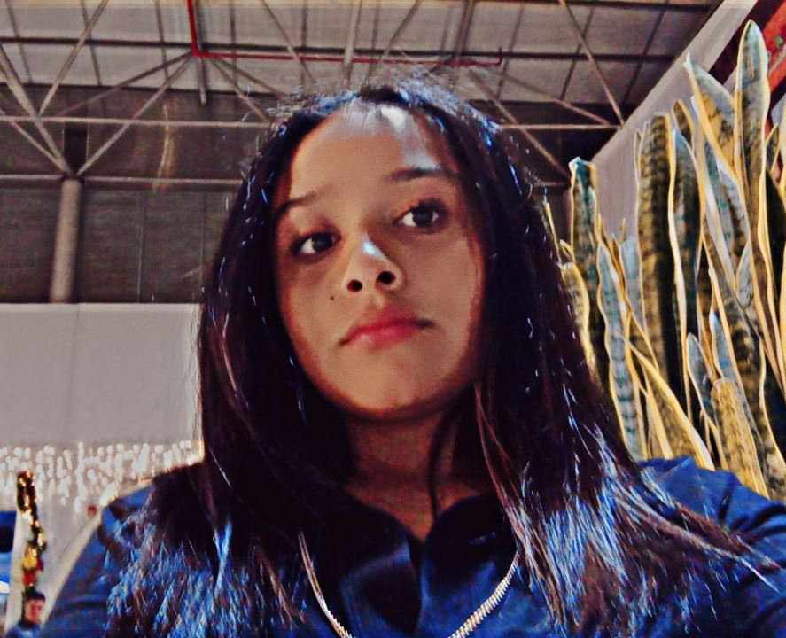
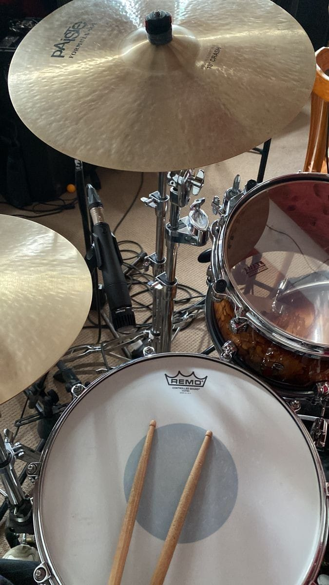
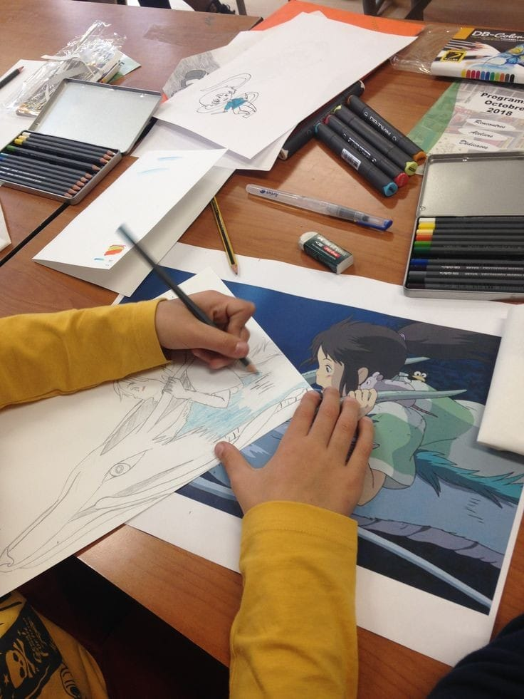
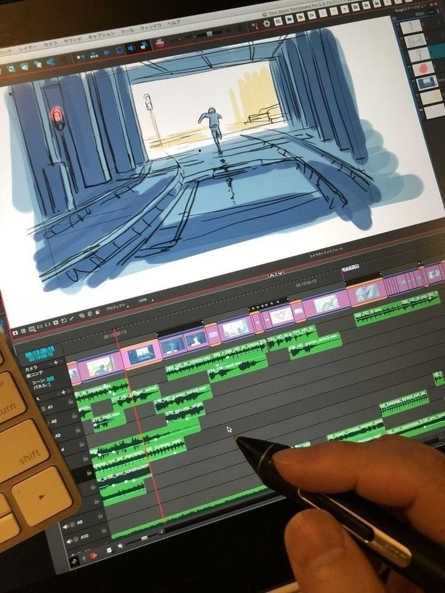
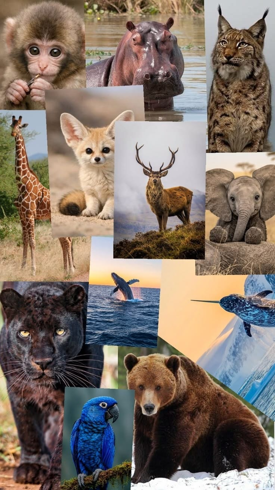
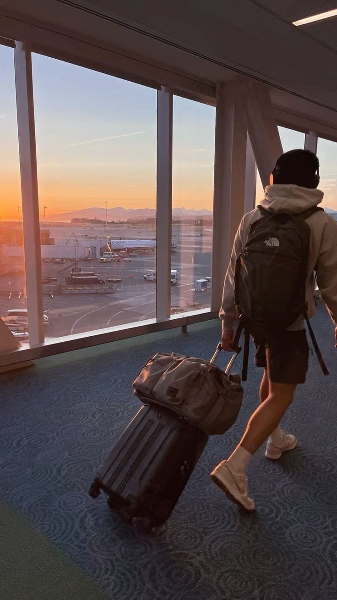

Hola, soy Sharon Daniela Preciado Morales, tengo 17 años y estudio en UNICAB Virtual. Me apasiona la música, la batería, el arte, la animación, los animales y descubrir nuevas experiencias que me permitan aprender y crecer.

Mi nombre es Sharon Daniela Preciado Morales, tengo 17 años y estudio en UNICAB Virtual.
Quiero crear una página web personal que represente quién soy, qué me apasiona y todas las experiencias que deseo vivir y aprender.
Me considero una persona curiosa, creativa y con muchas ganas de descubrir nuevas habilidades, desarrollar mis talentos y construir una vida llena de aprendizajes.
La música es una de las cosas que más me gustan. Me apasiona tocar la batería, disfrutar de los ritmos y expresarme a través de ella.
Uno de mis mayores sueños es formar una banda con personas que compartan mi entusiasmo por la música.
Me gustaría crear canciones, tocar en grupo y transmitir emociones mediante nuestros sonidos.


Quiero aprender a dibujar para desarrollar mi creatividad, explorar nuevas técnicas y convertir mis ideas en ilustraciones.
El arte representa para mí una oportunidad para imaginar, experimentar y expresarme de una forma diferente.
También quiero aprender animación para dar vida a mis ideas y crear mis propios personajes e historias.
Mi objetivo es producir contenido original y compartir mis proyectos creativos con otras personas.

Los animales despiertan mucha curiosidad en mí. Me gusta observarlos, conocer sus características, estudiar su comportamiento y aprender sobre las distintas especies que habitan nuestro planeta.
Quiero seguir descubriendo más sobre ellos y aprender cómo cuidarlos y contribuir a su bienestar.


Tengo muchas ganas de explorar el mundo y descubrir experiencias nuevas.
Me gustaría aprender varios idiomas para comunicarme con personas de diferentes culturas y ampliar mi visión del mundo.
También quiero practicar distintos deportes y viajar para conocer paisajes, costumbres y formas de vida diferentes.
Me encanta probar comida nueva y descubrir sabores diferentes. Disfruto aprendiendo sobre la gastronomía de distintas culturas y conociendo platos típicos de otros lugares.
Creo que cada comida cuenta una historia y cada nueva experiencia puede enseñarnos algo diferente sobre el mundo.
«Quiero llenar mi mundo de música, dar vida a mis ideas y descubrir todo lo que soy capaz de crear».